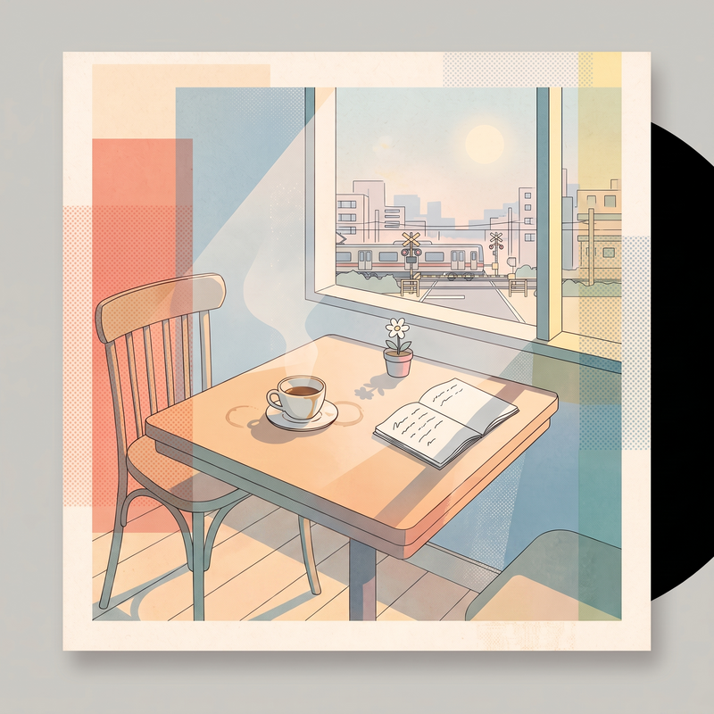

冷めたコーヒーで、未来を飲む
「冷めたコーヒーで、未来を飲む」は、靴下の片方が見つからない朝や、返せなかった言葉、洗い忘れた皿に揺れる小さな光のような、誰にも報告するほどではない日常の引っかかりを抱えたまま、それでも次の一歩へ進もうとする曲です。映画『リトル・ミス・サンシャイン』から受け取った、完璧でなくても同じ車に乗って前へ行けるような肯定感を、物語そのものではなく生活の体温として重ねました。「ラララ 急がなくていい／遅れてもいい」というフレーズには、誰かの正解に追いつけない日にも、自分の速度で息をしていいという願いを込めています。苦さを消さずに未来を飲むというのは、無理に明るくなることではなく、欠けたままの自分を連れて午後のほうへ向かうこと。少しボサノバの揺れを含んだ軽やかな音像の中で、ありふれた朝がほんの少しだけ生き延びる理由に変わる瞬間を描いた曲です。